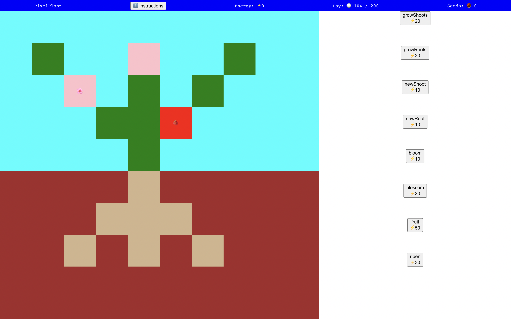

Jenny Zonka, Full Stack Developer

I'm a full-stack developer who loves to make useful and interesting web apps. I have previous experience in education, biology research, and sustainable agriculture.
Languages & Tools
 React
React Express.js
Express.js Javascript
Javascript Semantic HTML5
Semantic HTML5 CSS
CSS MongoDB
MongoDB Firebase
Firebase Git
Git
Previously used
 Python
Python R
R PHP
PHP MySQL
MySQL Java
Java
Projects
-
Blog API

Blog site with a RESTful API, public front end, and admin site. This is a project for The Odin Project.
- Currently building
- Built with
- MongoDB, Node, Express, React
- Repos
- API
- Public frontend
- Admin frontend
-
Clotion

Simple clone of Notion with rich text editing and databases. This was the final project for the Javascript course in The Odin Project.
-
Ye Olde Adventuring Shoppe

Editable database of weapons, armor, and shops for Dungeons & Dragons 5e. This was a project for The Odin Project.
-
Internet Scavenger Hunt

An internet scavenger hunt for the "Where's Waldo" project in The Odin Project. Art by Aaron Zonka.
-
Pixel Plant
Educational game created for the TOP-Jam 1 Edutainment game jam. Rated #7 for Creativity/Originality.
-
Coding projects in previous jobs
Though I am new to the tech sector, I am not new to using programming on the job. Below is a sample of coding projects I've undertaken in my previous positions.
- Teaching
- Wrote a python script to create new seating charts that takes into account student preference, teacher/special ed support staff preference, and students' special needs.
- R analysis and data visualization to evaluate patterns on exams.
- Biology research
- Used R, python, and ImageJ to analyze microscopy data and generate data visualizations (e.g. for this paper). Built and documented a pipeline for colleagues to use for the same types of analyses without needing to write code themselves.
- Sustainable agriculture
- Developed a crop database using PHP and MySQL for tracking vegetable plantings at multiple locations.
- Adapted the crop database to also support custom CSA box ordering based on what the farmer labeled available each week.
- Environmental education
- Working on a small team, I relaunched a nonprofit website and added an admin site (built with PHP and MySQL) to facilitate matching high schoolers to volunteer opportunities.
- Just for fun
- Wrote a script for running my family's secret santa for the last three years. The script blacklists certain matches (e.g. spouses) and generates emails with each participant's giftee.
About
Bio
I love to learn and I love to make things. I have been a teacher, a scientist, and a farmer. The throughline in all my careers is building things and solving problems with code.
These days I am a stay-at-home mom, and during my toddler's naps I work my way through the open-source curriculum The Odin Project. As I near the end of the curriculum, I am excited to look for an opportunity to pursue web development full-time and work as part of a team.
Resume
Interests and Hobbies
- Cooking
- DMing a weekly D&D game
- Volunteer tutoring
- Baking bread
Contact
I'm currently available for full-stack, front-end, or back-end positions.